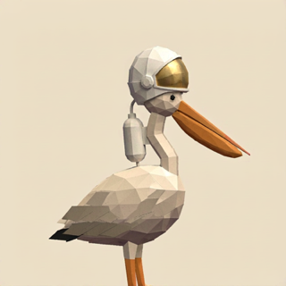

The bird pokes its head out of somewhere. Hit it to stamp. 24 seconds, same as its 24 hours.
0Stamps
0Streak
HEADWEAR & OTHER QUESTIONABLE DECISIONS — This is a character sheet, not a prize draw.
Draw the Moon and it is wearing a space helmet, because that is how it came down. All 27 stops are below. Nothing to unlock.

Flip two. The same thing shows up twice.
You only see what it left behind. Guess which stop that is.
Each postcard and its hat are a fixed pair — it came down wearing that.
0Score
0Streak
0Left